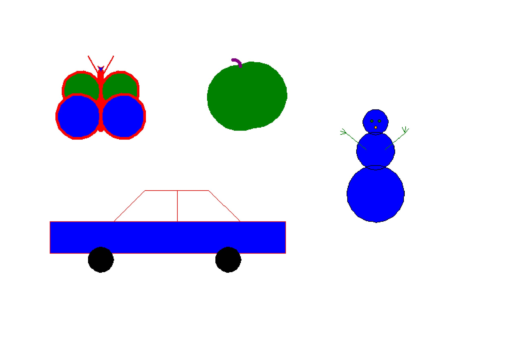
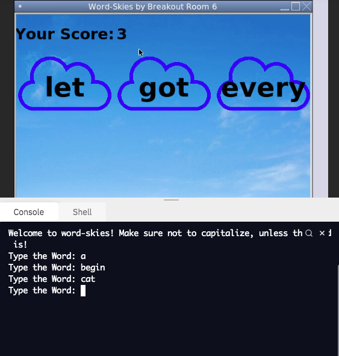
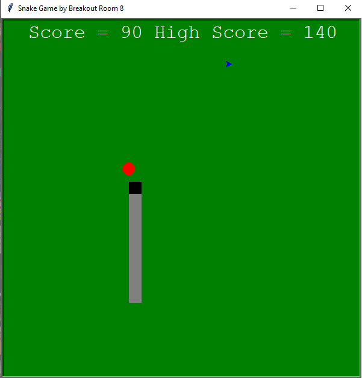

Homepage
Portfolio
About Me
This is my Portfolio Page!

For project 1.1.9, our group coded a program called, "Draw by typing," where the player chooses which object to draw and select the colors of it.
Our group divided the objects we chose to draw and came back together after coding our designated objects.

In 1.2.5, our group created wordsmith where the user has to type the right word to drop the cloud.
This game used mostly lists and index to create three different turtles in a shorter amount of codes.

Project 1.3.1 was straight to coding without any new stuff to learn, so we came up with the snake game.
However, in our game, we added a spike that can kill you if the snake eats it so you have to avoid the blue one.
We tried to add button so you can change the color but we didn't have time to put that extra work.

Project Scratch was an alternate project from PLTW where we have to build a game through scratch and not python.
This game is called Bubble Clicker! where you have to click the bubbles and you will gain a point.
Everytime you click the bubble, the bubble teleports to somewhere else and changes size and the point you get depends on the size.